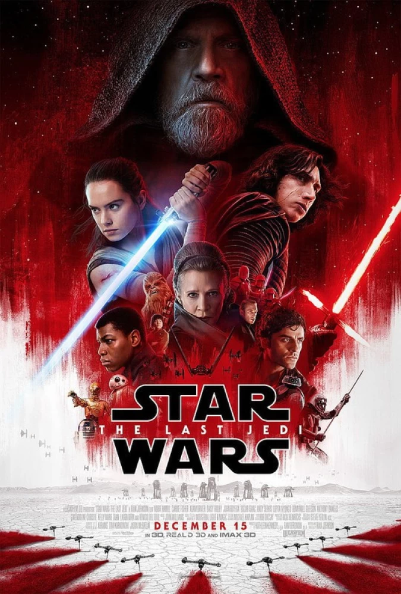
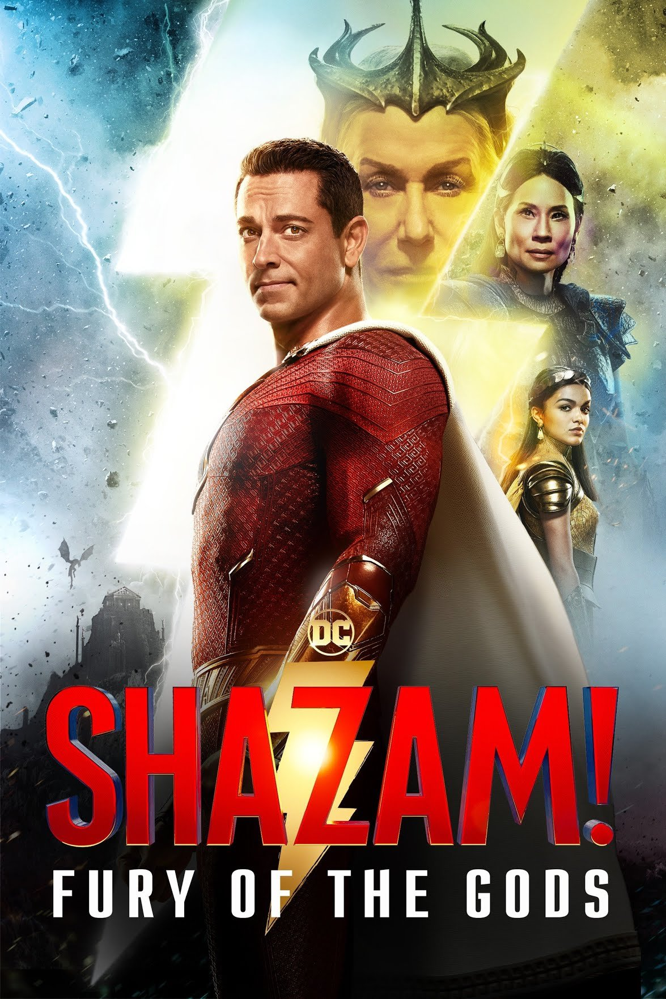
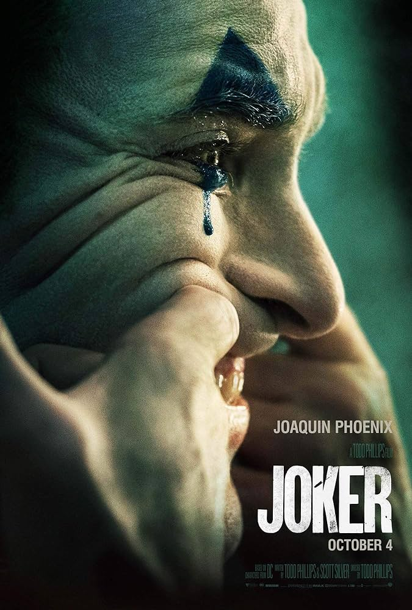
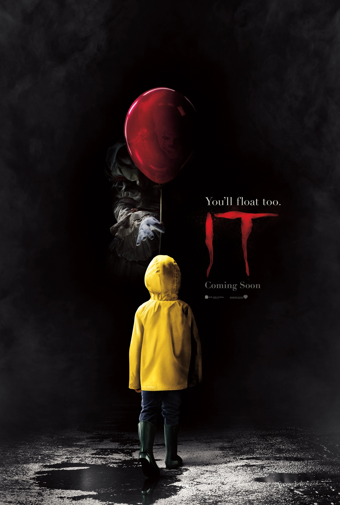
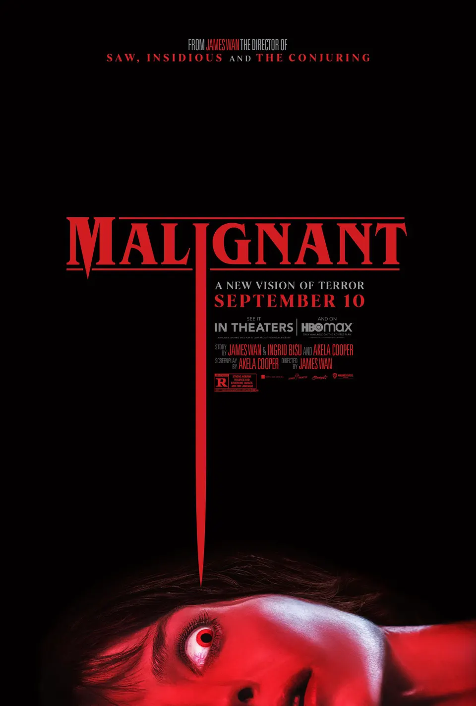
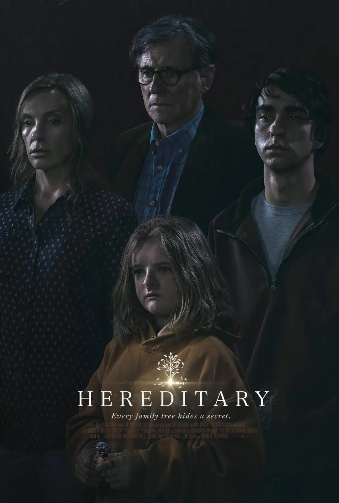
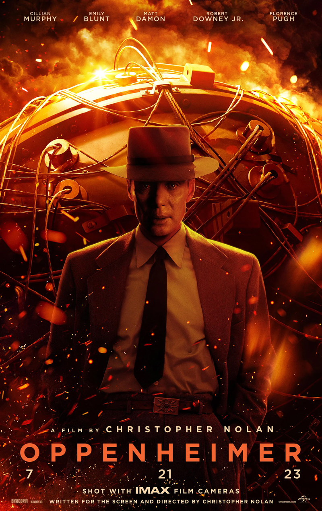
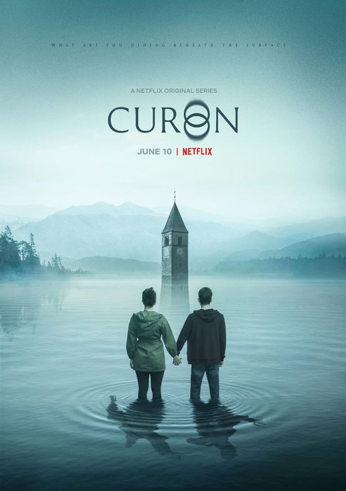
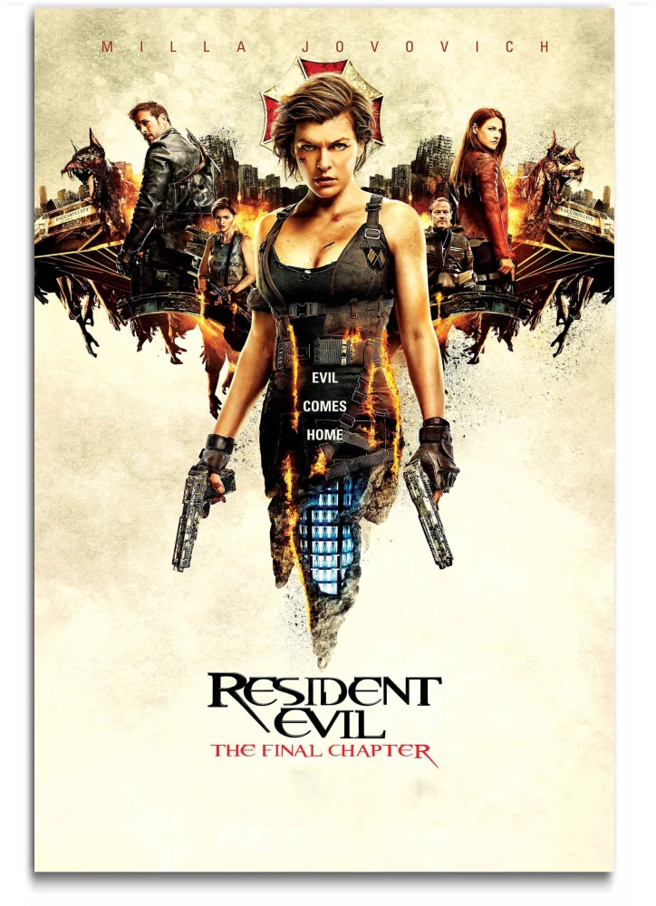

Blade Runner 2049 is a visually stunning sci-fi sequel that delves deep into the human condition, questioning what it means to be human in a dystopian future. With breathtaking cinematography and a haunting score, it's a masterful continuation of the original classic.

Star Wars The Last Jedi
In Star Wars: The Last Jedi, the Resistance confronts the First Order, and Rey's potential clashes with Kylo Ren's inner turmoil, leading to a pivotal Force-driven conflict.
Euphoria
Euphoria delves into the lives of high school students as they navigate love, addiction,Tarush Aman and identity in an intoxicating and visually stunning coming-of-age drama.
Avengers Endgame
In Avengers Endgame, the Earth's mightiest heroes assemble for an epic battle against a Tarush Amanpowerful villain, and the fate of the universe hangs in the balance in this action-packed superhero blockbuster.
The 100
In The 100, a group of young survivors returns to a post-apocalyptic Earth, facing variousTarush Aman challenges and threats as they strive to rebuild civilization and confront their own inner demons.
13 Reasons Why
In 13 Reasons Why, a series of cassette tapes reveal the tragic reasons behind a teenager'sTarush Aman suicide, as her friend unravels the dark secrets of their high school and community.
Lucifer
Lucifer, the Devil, abandons Hell to enjoy earthly pleasures in Los Angeles, where he opens Tarush Amana nightclub and becomes a civilian consultant to the LAPD, assisting in solving various criminal cases while exploring his own identity.
Ted
Ted is a comedy film about a grown man and his living teddy bear, who was magically brought to lifeTarush Aman during his childhood. Together, they navigate the challenges of adulthood, friendship, and relationships in humorous and unexpected ways.
F.R.I.E.N.D.S
Friends is a beloved sitcom that revolves around the lives of six close-knit friends living in New York City.Tarush Aman The show explores their personal and professional ups and downs, all while delivering humor and heartwarming moments.
Popular Movies
Creed 3
Creed 3 continues the story of Adonis Creed, the son of Apollo Creed, as he faces new challenges in and out Tarush Amanof the boxing ring, exploring themes of family, legacy, and self-discovery.
Avengers Infiniry War
In Avengers: Infinity War, the Marvel heroes battle the powerful Thanos as he seeks to collect all six Infinity Stones,Tarush Aman putting the fate of the universe at stake in an epic showdown.

Shazam Fury of God
In Shazam! Fury of the Gods, the superhero Shazam faces new magical threats and assembles a team of powered-up foster Tarush Amansiblings to confront ancient forces of evil in an action-packed adventure.
Guardians of the Galaxy:VOL 2
In Guardians of the Galaxy Vol. 2, the ragtag team of heroes embarks on another thrilling adventure to uncover Tarush Amanthe mysteries of Star-Lord's parentage while facing cosmic threats and deepening their bonds in a mix of humor and heart.
Red Notice
In Red Notice, a heist movie with a comedic twist, an FBI profiler teams up with two art thieves for a thrilling Tarush Aman and humorous chase across the globe as they pursue a notorious art thief who has pulled off an audacious heist.
Star Wars The Last Jedi
In "Star Wars: The Last Jedi," the Resistance confronts the First Order, and Rey's potential clashesTarush Aman with Kylo Ren's inner turmoil, leading to a pivotal Force-driven conflict.

Joker
In Joker, a gritty character study, an aspiring stand-up comedian descends into madness, becoming the iconic Batman villainTarush Aman as he grapples with societal rejection and his own inner demons.

Tarush Aman
It
In "It," a group of children confront their deepest fears as they battle a shape-shifting, child-eating entity that preys on the Tarush Amantown of Derry every 27 years.
Scream
In "Scream 2023," a new series of chilling murders grip the town of Woodsboro, sparking a fresh wave of terror and a huntTarush Aman for the mysterious killer, while uncovering dark secrets from the past.
Popular Tv Shows
GenV
In GenV, humanity is pushed to the brink as a global environmental catastrophe forces people to adapt, innovate, and fight for survival in a harsh, post-apocalyptic world.
Peaky Blinders
Peaky Blinders is an exhilarating crime drama series that follows the Shelby family's ruthless rise to power in post-World War ITarush Aman Birmingham, combining cunning strategies, dangerous rivalries, and stylish outfits.
Family Guy
Family Guy is an animated comedy series filled with zany humor and unforgettable characters as the Griffin family navigates everydayTarush Aman life and often ventures into absurd, satirical, and irreverent situations that will leave you in stitches.
Game of Thrones
Game of Thrones is an epic fantasy series where noble families vie for control of the Iron Throne in the mythical land of Westeros, marked Tarush Amanby political intrigue, complex characters, and epic battles amidst a backdrop of dragons and White Walkers.
The Boys
The Boys is a dark and satirical superhero series that explores a world where superheroes often abuse their powers and a group of Tarush Amanvigilantes tries to expose and confront them, uncovering dark secrets along the way.
Archive 81
Archive 81 is a supernatural horror series that follows an archivist who uncovers mysterious and terrifying audio tapes that reveal a Tarush Amanhidden world of paranormal events and dark forces. As he delves deeper into the tapes, he becomes entangled in a supernatural conspiracy that threatens his sanity and reality itself.
The Last Of Us
The Last of Us is a post-apocalyptic video game and TV series that revolves around the journey of Joel and Ellie, two survivors in a world ravaged by aTarush Aman fungal infection. Together, they must navigate through dangerous landscapes, confront hostile survivors, and face moral dilemmas as they search for safety and a potential cure.
How I Met Your Mother
How I Met Your Mother chronicles Ted Mosby's pursuit of love through humorous tales of friendship and romance in Tarush AmanNew York City, as he recounts his life story to his children. The show offers a blend of comedy and heartwarming moments, unraveling the journey to finding "the one."
Breaking Bad
Breaking Bad delves into the transformation of Walter White, a high school chemistry teacher turned methamphetamineTarush Aman manufacturer, and his descent into the criminal underworld. This gripping series explores themes of morality, power, and consequences with intense storytelling and remarkable character development.
Comedy
SuperBad
In Superbad two inseparable high school friends embark on a wild adventure to buy alcohol for a party, leadingTarush Aman to a night filled with misadventures and unexpected life lessons.
The Big Bang Theory
The Big Bang Theory is a beloved sitcom that follows the lives of socially awkward scientists and their interactions Tarush Amanwith the world, combining humor and heart in the quest for love, friendship, and scientific breakthroughs.
Young Sheldon
Young Sheldon offers a charming and witty glimpse into the early life of the brilliant and socially unconventionalTarush Aman Sheldon Cooper as he navigates the challenges of growing up in East Texas.
Bad Boys 2e
Bad Boys II is an action-packed buddy-cop film starring Will Smith and Martin Lawrence, known for its explosive sequencesTarush Aman and hilarious banter as they take on a powerful drug cartel.
Red Notice
In Red Notice, a heist movie with a comedic twist, an FBI profiler teams up with two art thieves for a thrilling and humorous Tarush Amanchase across the globe as they pursue a notorious art thief who has pulled off an audacious heist.
Family Guy
Family Guy is an animated comedy series filled with zany humor and unforgettable characters as the Griffin family navigates Tarush Amaneveryday life and often ventures into absurd, satirical, and irreverent situations that will leave you in stitches.
Two and Half Men
Two and a Half Men is a sitcom that follows the lives of two brothers, played by Charlie Sheen and Jon Cryer, and a young boy. Tarush AmanThe series is known for its humor, witty one-liners, and the chaotic dynamics within the household.
The Dictator
The Dictator is a satirical comedy film starring Sacha Baron Cohen as a fictional dictator. The movie humorously explores Tarush Amanthemes of power, politics, and dictatorship while delivering plenty of laughs.
Ted
Ted is a comedy film about a man and his living teddy bear, who comes to life through a childhood wish. Together,Tarush Aman they navigate the challenges of adulthood with humor and heart.
Horror
The Haunting of Bly Manor
The Haunting of Bly Manor is a chilling tale of love and loss, as it explores the mysteries and horrors lurking withinTarush Aman a secluded English manor, entwining the fates of its inhabitants.

Malignant
Malignant unravels a sinister and supernatural mystery when a woman is haunted by gruesome visions that lead her to aTarush Aman terrifying truth about her own past.
The Walking Dead
The Walking Dead depicts a post-apocalyptic world where survivors must navigate through hordes of zombies and confrontTarush Aman the dark sides of human nature to stay alive.

Heridetary
In Hereditary a family's secrets unravel after the death of their secretive grandmother, leading to a series of terrifyingTarush Aman and supernatural events that threaten their sanity and lives.
It
A group of children in a small town confront their deepest fears when they encounter a shape-shifting, malevolent entity thatTarush Aman often takes the form of a clown named Pennywise. They must work together to overcome their fears and stop the evil that haunts their town.
American Horror Story:2
Set in the eerie Briarcliff Mental Institution, dark secrets, supernatural occurrences, and the twisted experiments of a sadistic Tarush Amandoctor unfold as the characters grapple with their own sanity and the horrors lurking within.
Scream
In "Scream 2023," a new series of chilling murders grip the town of Woodsboro, sparking a fresh wave of terror and a hunt for theTarush Aman mysterious killer, while uncovering dark secrets from the past.
The Haunting of Hill House
The Haunting of Hill House a family's traumatic past returns to haunt them when they confront the chilling mysteries of their Tarush Amanold and ominous home, entwined with unsettling supernatural occurrences that have lasting psychological consequences.
The Nun
The Nun is a horror film that delves into the origins of the demonic nun character introduced in "The Conjuring 2." It followsTarush Aman a priest and a novitiate as they uncover unholy secrets and confront a malevolent force within a Romanian abbey, leading to a terrifying battle for their lives and souls.
Drama

Oppenhiemer
Oppenheimer explores the life of J. Robert Oppenheimer, the American physicist known for his pivotal role in the developmentTarush Aman of the atomic bomb during World War II.

Curon
Curon is an Italian supernatural thriller television series that follows the story of a woman and her teenage children who return to theirTarush Aman hometown, only to uncover dark family secrets and supernatural mysteries. As they delve into the town's eerie history, they are confronted by supernatural forces and must confront their past to protect their future.
Maze Runner
In Maze Runner: The Scorch Trials Thomas and his fellow Gladers must navigate a desolate wasteland known as the Scorch to find answersTarush Aman about the mysterious organization WCKD. With new dangers and alliances emerging, they face treacherous obstacles and uncover shocking truths about their past.
Game of Thrones
Game of Thrones is an epic fantasy series where noble families vie for control of the Iron Throne in the mythical land of Westeros, marked Tarush Amanby political intrigue, complex characters, and epic battles amidst a backdrop of dragons and White Walkers.
Joker
In Joker, a gritty character study, an aspiring stand-up comedian descends into madness, becoming the iconic Batman villain as he grapplesTarush Aman with societal rejection and his own inner demons.
Westworld
In Westworld, guests visit a futuristic theme park where lifelike android hosts cater to their every desire. However, as hosts gain sentience,Tarush Aman the line between reality and artificiality blurs, leading to profound moral and existential questions about the nature of consciousness and free will.
YOU
You on Netflix explores Joe Goldberg's sinister love life, revealing the dark side of obsession in the age of social mediaTarush Aman, Tarush Amanwith thrilling and suspenseful storytelling.
Inception
Inception takes audiences on a mind-bending journey through dreams, blending intricate heists and subconscious exploration, making it a cinematic masterpiece.
Breaking Bad
Breaking Bad is a gripping tale of a high school chemistry teacher turned methamphetamine kingpin, unraveling moral dilemmas and transformation in the criminal underworld.
Action
John Wick
John Wick, a retired hitman seeking vengeance, embarks on an action-packed journey through a stylish and Tarush Amanviolent criminal underworld in this thrilling film series.
The Boys
"The Boys" is a dark and irreverent series that explores a world where corrupt superheroes abuse their powers,Tarush Aman and a group of vigilantes takes a stand to expose their hidden truths.
Vikings
Vikings is an epic historical drama series that delves into the legendary Viking chieftain Ragnar Lothbrok's adventures as he raids and explores new lands, while also dealing with political challenges and conflicts within his own tribe.
Fast and Furious 9
Fast and Furious 9 is an action-packed sequel that continues to follow the high-octane adventures of DominicTarush Aman Toretto and his crew as they face a new threat, family secrets, and engage in adrenaline-pumping car chases and stunts around the world.
Lucifer
Lucifer is a devilishly charming and witty TV series that follows Lucifer Morningstar, the Devil, who becomes a consultant for the LAPD, solving crimes with his unique abilities, while navigating complex celestial and earthly relationships.

Resident Evil
Resident Evil: The Final Chapter is the thrilling conclusion to the action-packed film series, where Alice,Tarush Aman a formidable survivor, returns to Raccoon City for a final battle against the Umbrella Corporation and its zombie hordes to save humanity from extinction.
Creed III
Creed III continues the saga of Adonis Creed as he faces new challenges both inside and outside the boxing ring. With the past haunting him and new rivals emerging, Adonis must confront his own legacy and define what it means to be a true champion.
The Witcher
The Witcher follows Geralt of Rivia, a solitary monster hunter, as he navigates a world filled with dangerousTarush Aman creatures, sorcery, and political intrigue. His destiny becomes intertwined with a powerful sorceress and a young princess with a dangerous secret, leading to a tumultuous adventure that will test his skills and beliefs.
Game of Thrones
Game of Thrones is an epic fantasy series that unfolds the power struggles and intricate alliances among noble families Tarush Amanvying for the Iron Throne in the fictional continent of Westeros.